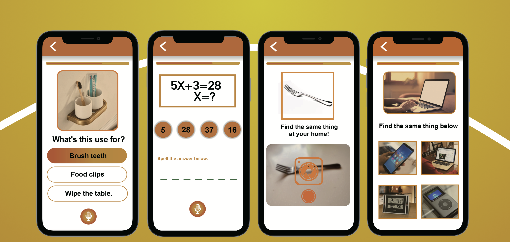

Braxercise
The number of elderly people who suffer Alzheimer’s disease is increasing year by year with the advent of aging society.While taking care of the elderly, I discovered that Alzheimer has a great impact on the life of the elderly. So, I’d like to design an APP for the middle-aged and the elderly to take precautions and prevent or alleviate the disease.
As one gets old, the brain will shrink and there will be amnesia and dementia. A proper amount of calculation and reading can stimulate the brain nerve to be active and prevent brain atrophy and brain degradation.
According to previous research on the causes and pre- vention methods of Alzheimer, I think flashcard can be employed as a comprehensive training carrier, which can keep the brain of the elderly in normal thinking frequency even after they get retired. In this way, the senile dementia can be prevented and delayed.
